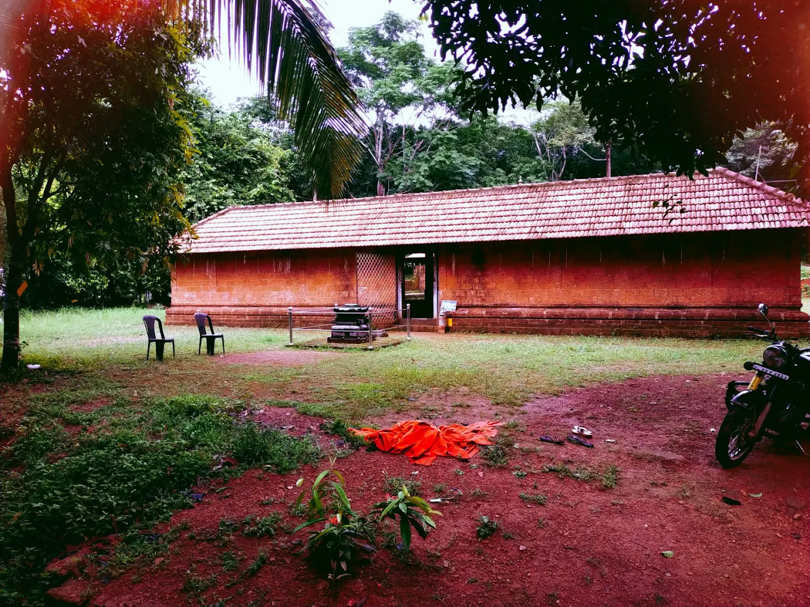
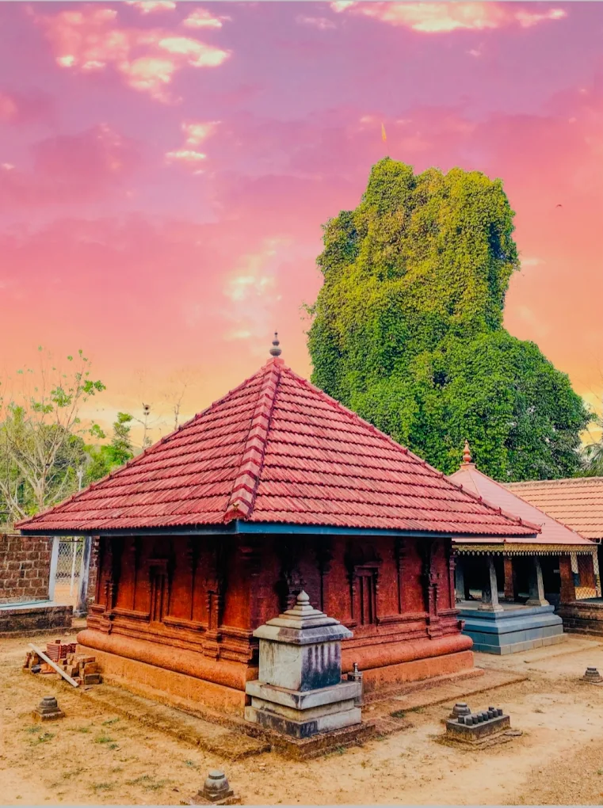

ഗാലറി



കണ്ണൂർ ജില്ലയിലെ തുളുവങ്ങാട് പ്രദേശത്തുള്ള പന്നിയൂർ ശ്രീ വരാഹമൂർത്തി ക്ഷേത്രം പുരാതനവും ശക്തവുമായ ദൈവസാന്നിധ്യത്തിനാണ് പ്രശസ്തം. വിഷ്ണുവിന്റെ വരാഹാവതാരത്തെ ആരാധിക്കുന്ന ഈ ക്ഷേത്രം രോഗശാന്തിക്കും ദോഷനിവാരണത്തിനും പ്രസിദ്ധമാണ്.
ഭൂമിയെ രക്ഷിച്ച വരാഹാവതാരമായ ശ്രീ വരാഹമൂർത്തി ഉഗ്രസ്വഭാവവും കരുണയും ഒരുപോലെ ഉള്ള ദൈവമാണ്. ശുദ്ധമായ ഭക്തിയോടെ പ്രാർത്ഥിച്ചാൽ ദൈവാനുഗ്രഹം ഉറപ്പാണെന്നാണ് വിശ്വാസം.
വരാഹമൂർത്തി തെയ്യം / വേലിയേറ്റം ഈ ക്ഷേത്രത്തിലെ പ്രധാന ഉത്സവമാണ്.
📍 പന്നിയൂർ, തുളുവങ്ങാട്, കണ്ണൂർ – 670142
🚌 കണ്ണൂർ നഗരത്തിൽ നിന്ന് റോഡ് സൗകര്യം
📞 ഫോൺ: XXXXXXXX